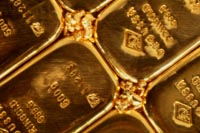

History
Saskatchewan began producing gold in small quantities in the early 1900's and possibly earlier from panning and dredging operations in the North Saskatchewan River and its tributaries. Gold prospecting was active in the Amisk Lake Region (near the present sites of Creighton and Flin Flon) in those early years (1910-15) and spread to the area north of La Ronge. Gold was discovered on the north shore of Lake Athabasca prior to the first world war and further prospecting in the 1920's and 1930's resulted in discoveries in the La Ronge volcanic belt, Flin Flon and Beaverlodge areas. By the late 1930's and early 1940's, gold was being produced in significant quantities at the Box Mine in the Crackingstone Peninsula and in minor amounts from the Prince Albert (Monarch/Pamon), Graham and Henning-Maloney mines near Flin Flon. Many small operators produced gold in the same locations, some remaining in operation until the outbreak of the Second World War. Wartime restrictions caused all the operations to close during the Second World War. Such restrictions included shortage of equipment, parts and labor; lower than expected grades; and a low fixed price of gold. Until recently, most of the province's gold has been produced as a byproduct of copper-zinc mining in Flin Flon. In the 1980's there was a renewed interest in mining gold in Saskatchewan. Several of the earlier known deposits are being redeveloped like the one in the Amisk Lake-Flin Flon region as well as the La Ronge belt. This greenstone belt is a zone of volcanic rock favourable to gold deposition. The Star Lake Mine, which began production in 1987 and situated on the belt and was the first exclusive mine for gold in fifty years. Since 1987, additional sites have begun production and have the potential to produce significant quantities of gold.
|
Description of Mineral
 Gold is a dense, inert (combines chemically with very few other elements), extremely malleable (can be reshaped) and ductile yellow metal. It can conduct heat and electricity and can reflect both visible light and infra red light. It is a relatively scare metal, and this combined with these desirable characteristics has made gold a prized find for many centuries.
Most gold that is naturally occurring is not visible to the naked eye. It is usually present in particles of 50-100 microns in diameter. These particles are usually within fractures of other minerals like iron and copper.
Location of Gold in Saskatchewan
Gold is found in nature, either entrapped in quartz veins by itself (known as free or visible gold) or in combination with other elements such as sulphide minerals of iron and copper. It has also been found in combination with silver, lead and tellurium as gold tellurides. The bulk of gold production in Canada comes from medium- to low-grade ores and as byproducts of base metal mines. Gold has been found as free flakes, grains or nuggets in river gravels (placer gold). These particles of visible gold are very small, the flakes being around 0.5 - 1.0 mm which are difficult to see. |
Mining Gold
Gold in quartz or sulphide minerals is extracted by mining the rock in which these are found, crushing it to a size fine enough to release gold particles and separating them from useless material (gangue) by one or a combination of a number of processes:
- Cyanidation
- Heap leaching (a variety of cyanidation)
- Mercury amalgamation
- Carbon-in-pulp absorption
- Electrolysis
- Froth flotation
- Zinc dust precipitation
Gold in river gravels is separated by dredging and washing the gravels over a series of corrugations, ribs, or riffles in wooden or steel channels, or over brush mats, so that lighter sand and gravel particles wash away leaving the heavier and slower moving gold behind. Refining is carried out by either chlorination of the molten metal or by electrolysis.
Where is gold produced in Saskatchewan today?
| Mine or Deposit | Years of Operation or Production of Gold | Amount of Gold Produced |
| Flin Flon (byproduct of base metal) | 1930 to present | |
| Cluff Lake (byproduct of uranium mining operation) | 1987-1988 | |
| Star Lake Mine | January 1987 to March 1989 | 76,947 ounces |
| Jolu Mine (International Mahogany/Corona Corporation) | October 1988 to May 1991 | 203,301 ounces |
| Fork Lakes - Jasper Mine (Cameco-Shore Gold Fund) | April 1990 to May 1991 | 73.290 ounces |
| Seabee Mine (Claude Resources) | November 1991 - ? | 200,000 ounces as of November 1995 |
| Contact Lake Mine (Cameco/Uranerz) 63 km northeast of La Ronge | February 1995 to ? | 60,000 ounces per year (estimated deposit over 337,000 ounces) |
| Komis (at Waddy Lake) | potential | |
| Box Mine (Greater Lenora Resources Corporation) | renewed potential |
Uses of Gold
What is gold used for? There are the obvious uses, such as a store of wealth by governments and individuals, andjewellery. And, there are other less obvious uses for this precious metal.
- store of wealth by governments and individuals
- jewellery
- electronics (electrical contacts)
- bullion coins and medals
- dentistry
- miscellaneous industrial and decorative applications like
- gold leaf for books, manuscripts
- gold leaf for building interiors, statues, cathedrals and palace domes
- coatings for reflective glass
- coatings on satellites and spacecraft
- microthin coatings on aircraft windows
- laboratory equipment
- chemical manufacturing
Economic Impact for Saskatchewan
Gold production in Saskatchewan is relatively small. The province does have the potential to be a significant gold producer, as recent discoveries and operations have shown. Canada has its place in the world as gold producer,ranking fifth in 1993 behind South Africa, the U.S.A., Australia and the former U.S.S.R. in gold production.